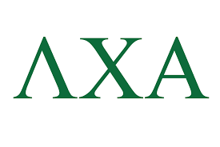

Fraternity Logo
Latest Announcements
- 📢 Finals are around the corner—plan your study sessions!
- ✅ This weeks library Rooms: Monday-Friday @ 12 - 6 PM, Library Room 128D
- 📬 Submit help requests early to get support before finals!
Purpose
The Grade Tracker is built to support academic success and promote transparency within the fraternity by providing members with tools to track GPA, access study resources, and request academic support when needed.
Need Help?
Visit the Help Request page to connect with our academic chair or tutoring support.